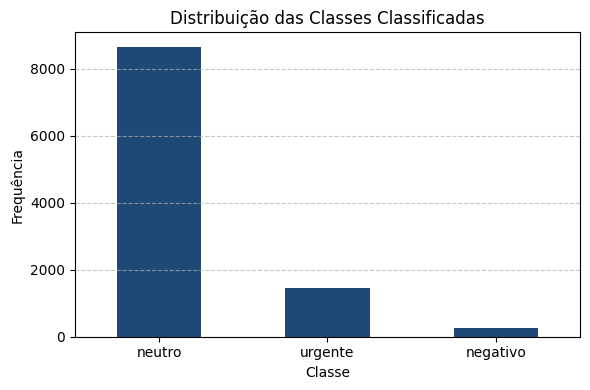

Este projeto utiliza dados reais do Reclame Aqui para aplicar técnicas de Processamento de Linguagem Natural (NLP) com o objetivo de classificar automaticamente o sentimento de reclamações textuais.
Utilizei um arquivo real contendo milhares de reclamações já pré-processadas (sem stopwords, pontuações e termos irrelevantes). A coluna freq_words_removed contém o texto limpo pronto para análise.
Para uma análise visual das palavras mais frequentes, criei uma nuvem de palavras com todos os textos do dataset.

A classificação foi feita com base em regras simples que procuram termos-chave no texto. Por exemplo, a presença de “cancelamento” ou “atraso” classifica como urgente, enquanto expressões como “péssimo” ou “nunca mais” indicam um sentimento negativo. Quando não há indícios fortes, o texto é classificado como neutro.
Abaixo, um gráfico de barras representa a frequência de cada categoria identificada pela IA nas reclamações processadas.
Como os dados não estavam rotulados originalmente, simulei rótulos aleatórios para demonstrar a construção de uma matriz de confusão com a biblioteca sklearn. Esta etapa permite visualizar como um modelo real seria avaliado.

Texto: "Fiz o cancelamento da compra e até agora não recebi o reembolso."
Classificação: Urgente
Este projeto pode ser evoluído com o uso de modelos supervisionados de machine learning (como Naive Bayes ou Random Forest), utilizando um conjunto de dados rotulado para aumentar a precisão e confiabilidade da classificação.
Repositório: github.com/htarod/projeto-nlp